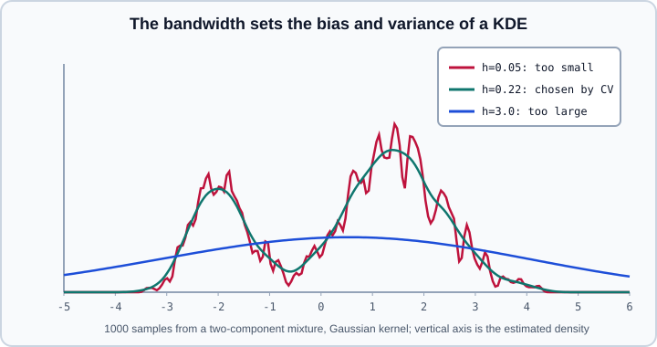

Covariance & Density Estimation
|
This content was generated with the assistance of AI and should be verified against the official documentation before being relied on in production. |
This page covers two neighbouring parts of the scikit-learn user guide: sklearn.covariance (estimating the covariance or precision matrix of a sample) and the density estimation chapter, centred on KernelDensity from sklearn.neighbors. No PyTorch or TensorFlow code is used. Examples were run on Python 3.13 with scikit-learn 1.9.1, NumPy 2.5.4 and SciPy 1.18.1 on 2026-10-31. In the first example NumPy emits floating-point RuntimeWarning messages from slogdet inside score; the printed numbers are sane and the warnings are omitted below.
Gaussian mixtures, the third density estimator in the user guide, already have a page: Gaussian Mixture Models. The robust estimator MinCovDet is also the engine of EllipticEnvelope, described in Outlier & Novelty Detection. Covariance estimates feed linear and quadratic discriminant analysis, covered in Discriminant Analysis, and the eigen-decomposition of a covariance matrix is PCA, in PCA, TruncatedSVD & NMF.
Why estimating a covariance matrix is hard
For \(n\) samples of \(p\) variables the sample covariance \(\hat{\Sigma}\) is unbiased, but it has \(p(p+1)/2\) free entries. When \(n\) is not much larger than \(p\) its eigenvalues spread out: the smallest are too small and the largest too large. The matrix becomes ill-conditioned, or singular when \(n \le p\), so its inverse (the precision matrix, which Mahalanobis distances, Gaussian log-likelihoods and discriminant analysis all need) is dominated by noise. Outliers are a second threat: a few points can move the mean and inflate the covariance arbitrarily. The estimators in sklearn.covariance answer one or the other.
| Estimator | Idea | Use when |
|---|---|---|
|
Maximum likelihood estimate |
\(n \gg p\), clean data |
|
Blend with a scaled identity, using a coefficient you choose |
You know a good shrinkage value |
|
Shrinkage chosen from the data to minimise the mean squared error |
Default choice for \(p\) comparable to \(n\) |
|
Oracle approximating shrinkage, assuming Gaussian data |
Small \(n\), roughly Gaussian data |
|
Sparse precision matrix with an l1 penalty |
You want conditional independence structure |
|
Robust location and covariance from the cleanest subset of the data |
Contamination by outliers |
Empirical and shrunk covariance
EmpiricalCovariance stores location_ (the mean), covariance_ and precision_. Its assume_centered option skips the mean subtraction; use it only when the data really have mean zero, because it then also requires train and test data to be centred. ShrunkCovariance computes
\[ \Sigma_{\text{shrunk}} = (1-\alpha)\,\hat{\Sigma} + \alpha\,\frac{\operatorname{Tr}\hat{\Sigma}}{p}\,I , \]
which pulls every eigenvalue towards their average and so reduces the ratio between the largest and the smallest. LedoitWolf and OAS use the same form but compute \(\alpha\) from the sample (it is stored as shrinkage_); they differ in the formula, and OAS assumes Gaussian data and is designed to have lower error than Ledoit-Wolf in that setting, particularly for small samples. Each estimator also has a function form (empirical_covariance, shrunk_covariance, ledoit_wolf, oas) that works on arrays directly and returns the matrix, and for the data-driven ones the shrinkage as well.
The experiment below draws 50 training samples from a 40-dimensional Gaussian whose variables all have unit variance and correlation 0.3, so the empirical covariance is rank-deficient-prone. The estimators are compared by the log-likelihood of 2000 fresh test samples (score), which is the quantity shrinkage is designed to improve, and by the condition number of the estimate.
import numpy as np
from sklearn.covariance import EmpiricalCovariance, LedoitWolf, OAS, ShrunkCovariance, ledoit_wolf
p = 40
true_cov = 0.7 * np.eye(p) + 0.3 * np.ones((p, p)) # unit variances, correlation 0.3
rng = np.random.RandomState(0)
X_train = rng.multivariate_normal(np.zeros(p), true_cov, size=50)
X_test = rng.multivariate_normal(np.zeros(p), true_cov, size=2000)
estimators = {
"empirical": EmpiricalCovariance(),
"shrunk(0.1)": ShrunkCovariance(shrinkage=0.1),
"ledoit-wolf": LedoitWolf(),
"oas": OAS(),
}
for name, est in estimators.items():
est.fit(X_train)
err = np.linalg.norm(est.covariance_ - true_cov, "fro")
cond = np.linalg.cond(est.covariance_)
print(f"{name:12s} error {err:5.2f} condition {cond:7.1f} test log-likelihood {est.score(X_test):8.1f}")
print("shrinkage:", round(estimators["ledoit-wolf"].shrinkage_, 3), round(estimators["oas"].shrinkage_, 3))
cov, shrinkage = ledoit_wolf(X_train)
print(cov.shape, round(shrinkage, 3))
print(estimators["ledoit-wolf"].mahalanobis(X_test[:3]).round(1))empirical error 5.48 condition 1581.1 test log-likelihood -167.2
shrunk(0.1) error 5.59 condition 100.7 test log-likelihood -68.1
ledoit-wolf error 6.09 condition 36.1 test log-likelihood -57.3
oas error 6.11 condition 35.3 test log-likelihood -57.1
shrinkage: 0.248 0.252
(40, 40) 0.248
[64. 42.6 90.4]Shrinkage costs a little in the entry-wise (Frobenius) error here, because the target, a multiple of the identity, ignores the true correlations, yet the condition number falls from about 1600 to about 35 and the held-out log-likelihood improves from -167 to about -57. The log-likelihood is the right yardstick when the matrix will be inverted. The mahalanobis method returns squared Mahalanobis distances of new points from the fitted location and covariance.
Sparse precision matrices: GraphicalLasso
A zero in the precision matrix \(K = \Sigma^{-1}\) means that two variables are conditionally independent given all the others, so a sparse \(K\) is a graph of direct dependencies. GraphicalLasso maximises the penalised Gaussian likelihood
\[ \hat{K} = \underset{K \succ 0}{\arg\min}\; \operatorname{tr}(SK) - \log\det K + \alpha \lVert K \rVert_1 , \]
where \(S\) is the empirical covariance and a larger alpha gives a sparser matrix. GraphicalLassoCV chooses alpha by cross-validation. Standardise the variables first, since the penalty acts on matrix entries and is not scale invariant. The user guide notes that the cross-validated version tends to keep too many edges, although the true edges usually get larger weights.
import numpy as np
from sklearn.covariance import GraphicalLasso, GraphicalLassoCV
from sklearn.preprocessing import StandardScaler
# chain-structured precision matrix: variable i depends only on i-1 and i+1
p = 8
prec = np.eye(p)
for i in range(p - 1):
prec[i, i + 1] = prec[i + 1, i] = 0.45
cov = np.linalg.inv(prec)
rng = np.random.RandomState(0)
X = StandardScaler().fit_transform(rng.multivariate_normal(np.zeros(p), cov, size=300))
true_edges = {(i, i + 1) for i in range(p - 1)}
def edges(P, tol=1e-3):
return {(i, j) for i in range(p) for j in range(i + 1, p) if abs(P[i, j]) > tol}
glcv = GraphicalLassoCV(cv=5).fit(X)
print("CV alpha:", round(glcv.alpha_, 4), "edges:", len(edges(glcv.precision_)),
"true edges found:", len(edges(glcv.precision_) & true_edges), "of", len(true_edges))
for a in (0.01, 0.05, 0.2, 0.5):
m = GraphicalLasso(alpha=a).fit(X)
print(f"alpha={a:<5} off-diagonal pairs kept: {len(edges(m.precision_))}")CV alpha: 0.0263 edges: 15 true edges found: 7 of 7
alpha=0.01 off-diagonal pairs kept: 25
alpha=0.05 off-diagonal pairs kept: 14
alpha=0.2 off-diagonal pairs kept: 10
alpha=0.5 off-diagonal pairs kept: 6The chain has seven true edges. The cross-validated model recovers all seven but also keeps eight spurious ones, as the guide warns, and increasing alpha removes edges, eventually including true ones (at 0.5 only six pairs remain, so at least one true edge is lost). Treat the edge set as a hypothesis and prune it with a stability or domain argument, not as proof of structure.
Robust estimation: MinCovDet
MinCovDet implements the FastMCD algorithm: it searches for the subset of observations, of proportion support_fraction, whose empirical covariance has the smallest determinant, then rescales that covariance for consistency and optionally reweights all points by their Mahalanobis distance. It estimates a robust location too. The unreweighted result is kept in raw_location_ and raw_covariance_, and the Boolean mask of points used is support_.
import numpy as np
from sklearn.covariance import EmpiricalCovariance, MinCovDet
rng = np.random.RandomState(42)
true_cov = np.array([[1.0, 0.8], [0.8, 1.0]])
X = rng.multivariate_normal([0, 0], true_cov, size=200)
X = np.vstack([X, rng.multivariate_normal([4, -4], 0.3 * np.eye(2), size=20)]) # 20 outliers
emp = EmpiricalCovariance().fit(X)
mcd = MinCovDet(random_state=0).fit(X)
print("location empirical", emp.location_.round(2), " MCD", mcd.location_.round(2))
print("empirical covariance\n", emp.covariance_.round(2))
print("MCD covariance\n", mcd.covariance_.round(2))
print("support size", int(mcd.support_.sum()), "of", len(X))
d_emp, d_mcd = emp.mahalanobis(X), mcd.mahalanobis(X)
print("median squared distance of the 20 outliers empirical:", round(float(np.median(d_emp[-20:])), 1),
" MCD:", round(float(np.median(d_mcd[-20:])), 1))location empirical [ 0.35 -0.36] MCD [-0.01 0.01]
empirical covariance
[[ 2.22 -0.68]
[-0.68 2.19]]
MCD covariance
[[0.86 0.68]
[0.68 0.87]]
support size 194 of 220
median squared distance of the 20 outliers empirical: 8.9 MCD: 171.1The outliers drag the empirical covariance into a wrong shape (the correlation even changes sign), while the MCD fit stays on the main cloud, and its Mahalanobis distances expose the outliers far more clearly. The MCD covariance has the right correlation (about 0.8) but a smaller scale than the true variance of 1 in this sample, so do not read absolute scale off a robust estimate of a small sample without checking. MCD needs more samples than variables to be well defined and becomes slow and unstable in high dimension.
Density estimation
Density estimation sits between modelling and feature engineering: you fit \(\hat{p}(x)\) to unlabelled data, then use it to score how typical new points are, to draw synthetic samples, or as the class-conditional density of a Bayes classifier.
From histograms to kernel density
A histogram is the simplest estimator, but its look depends on bin placement and width: shifting the bins can change the story told by the same data. Kernel density estimation (KDE) replaces the fixed grid by a small "bump" (the kernel) centred on every observation and adds the bumps up. The data decide where the mass goes, and the bump shape decides how smooth the result is. For a bandwidth \(h\) and a kernel \(K\),
\[ \hat{p}(y) \propto \sum_{i=1}^{N} K(y - x_i;\, h) , \]
where scikit-learn applies the normalising constant so that the density integrates to one.
KernelDensity offers six kernels:
kernel |
Shape (up to normalisation) |
|---|---|
|
\(\exp(-x^2 / 2h^2)\), smooth and the default |
|
constant inside radius \(h\), a square block |
|
\(1 - x^2 / h^2\) |
|
\(\exp(-x/h)\), pointed at the centre |
|
\(1 - x/h\) inside \(h\) |
|
\(\cos(\pi x/2h)\) inside \(h\) |
The kernel matters much less than the bandwidth. A small bandwidth follows the sample closely (low bias, high variance); a large one blurs distinct modes into one hump. bandwidth may be a number or one of the rules "scott" and "silverman", which compute bandwidth_ from the data; rules based on Gaussian assumptions tend to oversmooth multimodal data. The algorithm option picks a KD tree, a ball tree or "auto", metric selects the distance (results are normalised correctly only for the Euclidean metric), atol and rtol trade accuracy for speed in tree traversal, and fit accepts sample_weight.

Choosing the bandwidth and using the model
score_samples returns the log-density of each point, so use np.exp to get a density. score returns the total log-likelihood of the data (a sum, not a mean). Do not choose the bandwidth by scoring the training data: the likelihood always improves as the bandwidth shrinks, because each point then explains itself. Cross-validate the likelihood instead, which is what GridSearchCV does when KernelDensity is the estimator, because the default score is the log-likelihood and no labels are needed (see Hyperparameter Search).
import numpy as np
from sklearn.model_selection import GridSearchCV
from sklearn.neighbors import KernelDensity
rng = np.random.RandomState(0)
X = np.concatenate([rng.normal(-2, 0.5, 300), rng.normal(1.5, 1.0, 700)])[:, None]
for kernel in ("gaussian", "tophat", "epanechnikov", "exponential", "linear", "cosine"):
kde = KernelDensity(kernel=kernel, bandwidth=0.4).fit(X)
print(f"{kernel:13s} total log-likelihood {kde.score(X):9.1f}")
for bw in (0.05, 0.4, 3.0):
print("bandwidth", bw, "training log-likelihood", round(KernelDensity(bandwidth=bw).fit(X).score(X), 1))
search = GridSearchCV(KernelDensity(kernel="gaussian"), {"bandwidth": np.logspace(-1.5, 0.5, 20)}, cv=5)
search.fit(X)
best = search.best_estimator_
print("best bandwidth", round(search.best_params_["bandwidth"], 3))
print(np.exp(best.score_samples(np.linspace(-5, 6, 12)[:, None])).round(3))
print(best.sample(5, random_state=0).ravel().round(2))
fine = np.linspace(-8, 9, 4000)[:, None]
print("integral", round(float(np.exp(best.score_samples(fine)).sum() * (fine[1, 0] - fine[0, 0])), 3))gaussian total log-likelihood -1790.1
tophat total log-likelihood -1777.3
epanechnikov total log-likelihood -1772.5
exponential total log-likelihood -1806.3
linear total log-likelihood -1767.5
cosine total log-likelihood -1771.8
bandwidth 0.05 training log-likelihood -1733.4
bandwidth 0.4 training log-likelihood -1790.1
bandwidth 3.0 training log-likelihood -2305.1
best bandwidth 0.22
[0. 0. 0.038 0.212 0.07 0.094 0.261 0.227 0.08 0.015 0. 0. ]
[2.5 1.83 0.83 1. 2.18]
integral 1.0On the training data the smallest bandwidth gets the best score, which is exactly the trap: 0.05 looks better than 0.4, yet the cross-validated choice is about 0.22, and the density it produces shows the two modes. The kernels differ by only a few tenths of a percent here. sample draws new points from the fitted density. It works for the Gaussian and tophat kernels and raises NotImplementedError for the other four, so choose one of those two if you need to generate data.
KDE, mixtures and neighbours
KDE is non-parametric: it stores the whole training set and its query cost grows with it, and its accuracy degrades quickly with the number of dimensions because of the curse of dimensionality, so it is mostly used in one to a few dimensions or after dimensionality reduction. A Gaussian mixture is a parametric alternative with a fixed number of components and cheap evaluation, see Gaussian Mixture Models. The tree structures behind KernelDensity are the same as those used for nearest-neighbour search, see Nearest Neighbors. Fitting one KernelDensity per class and applying Bayes' rule gives a non-parametric generative classifier, and packaging such a model as an estimator is the subject of Building Custom Estimators & Transformers.
Pitfalls
-
Never invert a poorly conditioned sample covariance. Use
LedoitWolforOASwhen \(n\) is not much larger than \(p\), and compare estimators by held-out log-likelihood. -
Standardise before
GraphicalLasso. The penalty is not scale invariant; the user guide recommends standardised data for better recovery. -
Do not trust the edge set blindly. The cross-validated penalty tends to select too many edges.
-
assume_centered=Trueon uncentred data gives a wrong covariance (it then estimates the second-moment matrix). -
Robust estimators need enough data.
MinCovDetdegrades when the number of variables approaches the number of samples. -
Tune the KDE bandwidth with held-out likelihood, never with the training score, and rescale features first, since a single bandwidth applies to all dimensions.
-
Densities in high dimensions are tiny numbers. Work with log-densities (
score_samples) and avoid exponentiating unless needed. -
Continuous-valued densities are not probabilities. A density can exceed 1; only integrals over regions are probabilities.